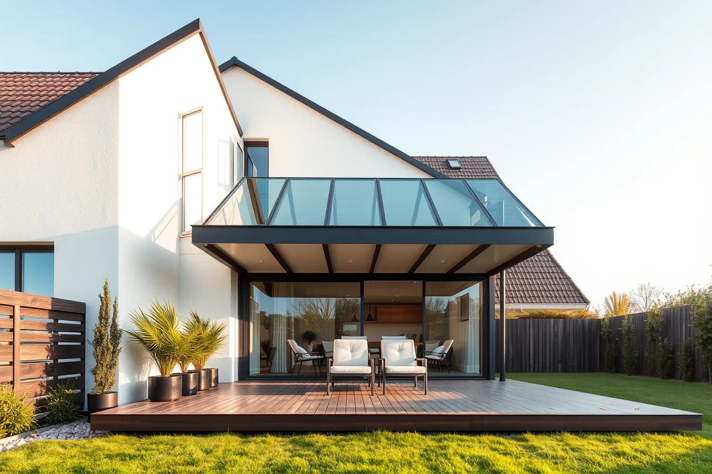
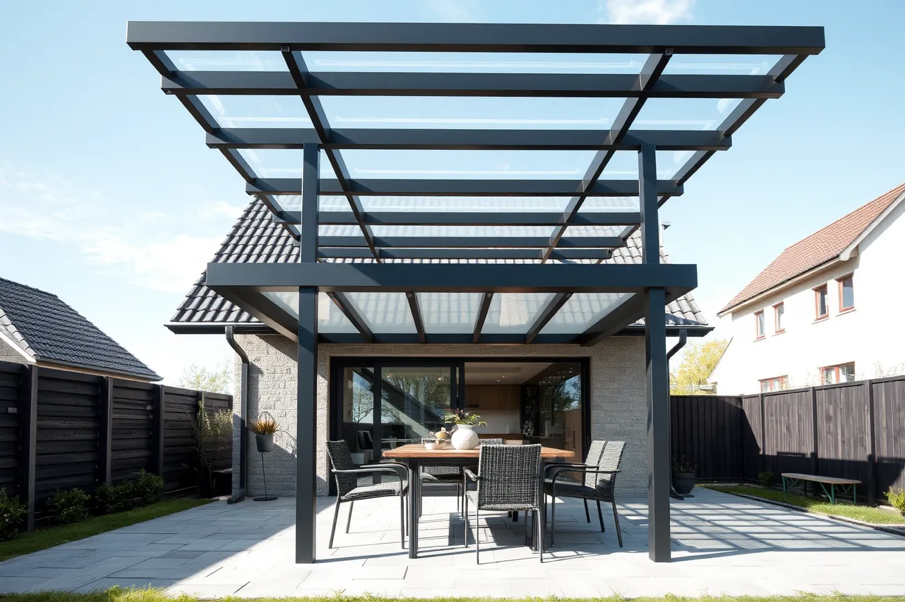
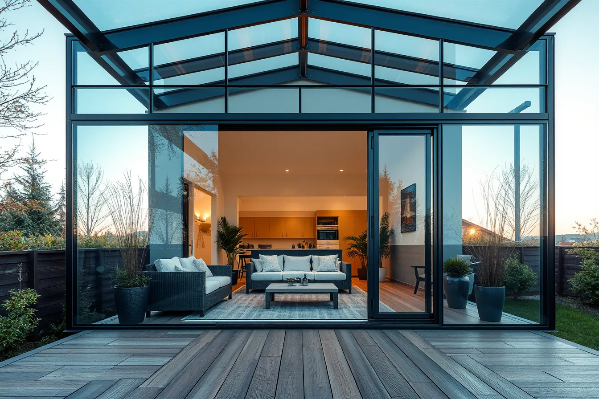
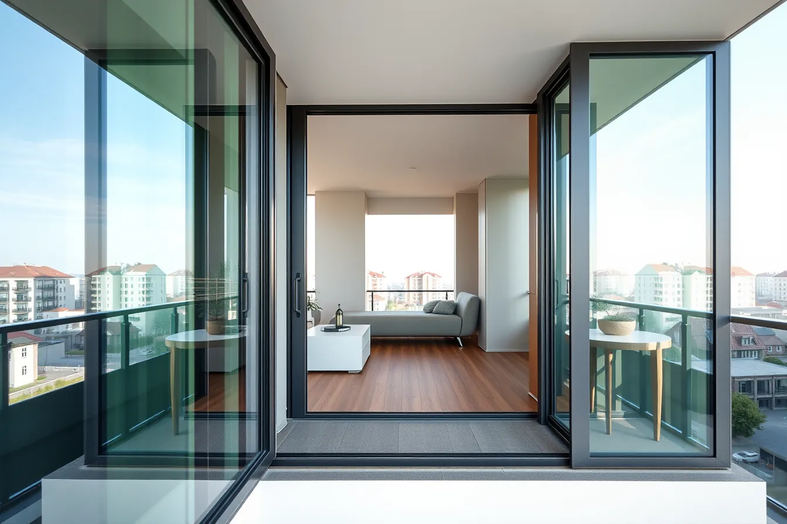
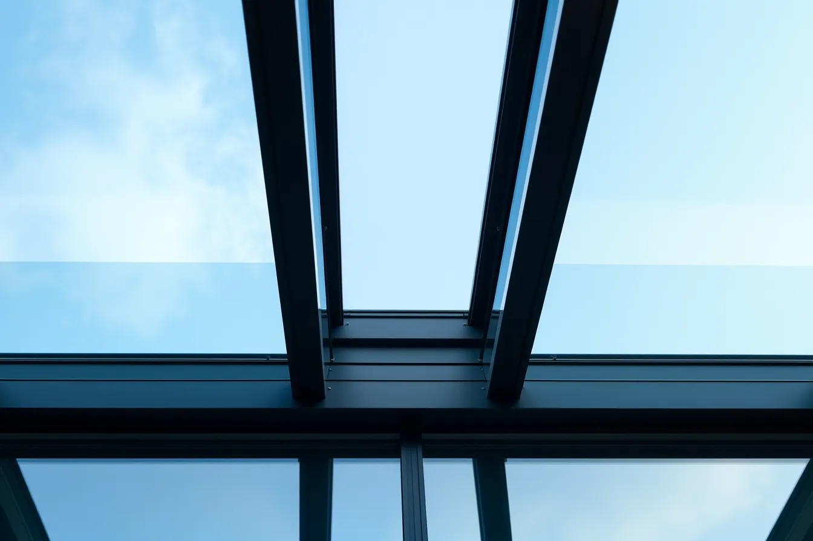
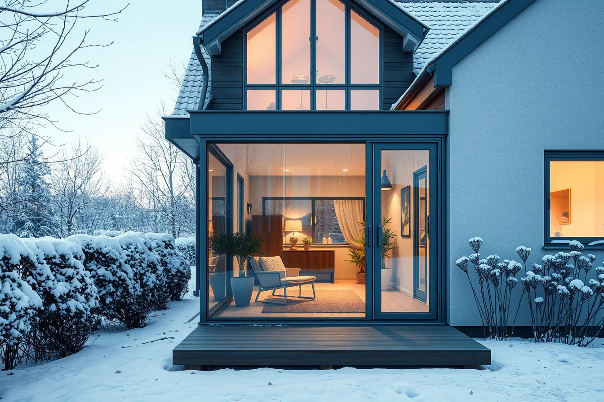
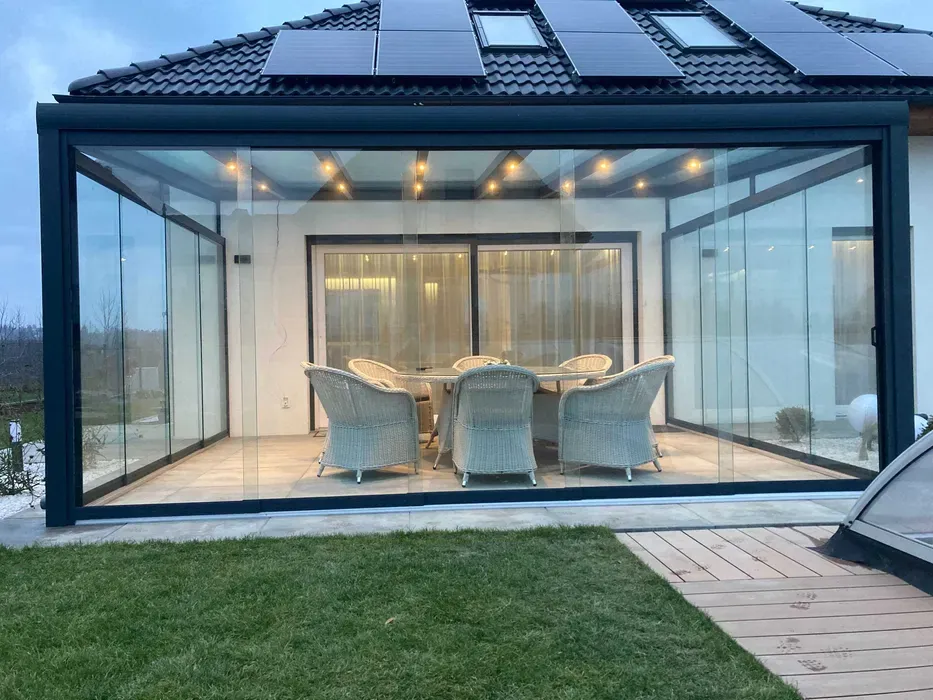
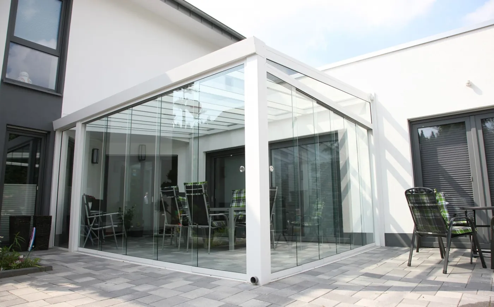
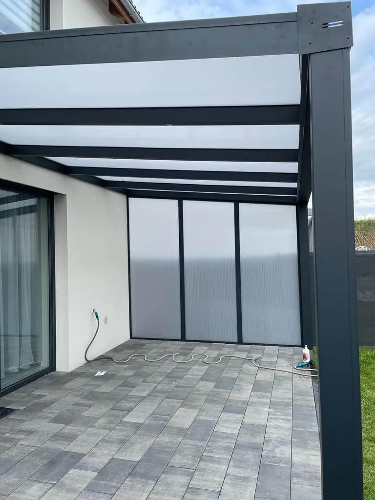
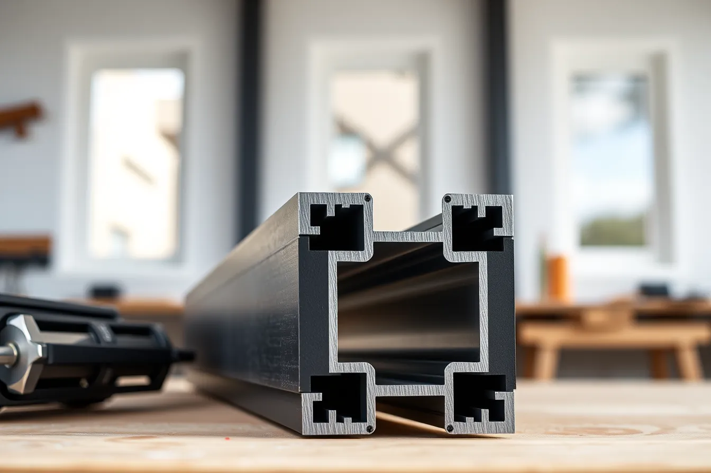

Producent · Koło · cała Polska
Zadaszenia i ogrody zimowe,
które przetrwają lata
Aluminium z profilami o grubości ścianki 5 mm, szkło VSG albo poliwęglan z podwójnym filtrem UV. Montaż do 2 tygodni od zamówienia, przez cały rok.
- 5 mmścianka profili
- 900+wykonanych zleceń
- 2 tyg.do montażu
Oferta
Pięć sposobów na więcej miejsca przy domu

Zadaszenia tarasowe
Szkło VSG albo poliwęglan, chroni przed deszczem i słońcem przez cały rok.

Zabudowy tarasów
Szklane ściany przesuwne, taras jak dodatkowy pokój.

Zabudowy balkonów
Bezramowe szkło, cisza i ciepło na balkonie.

Dachy szklane
Światło z góry, smukłe profile, zintegrowane rynny.

Ogrody zimowe
Zimne ogrody zimowe, w których siedzi się od marca do listopada.
Zdjęcia w ofercie poglądowe, w gotowej stronie Państwa realizacje.
Konfigurator
Złóż swoje zadaszenie w minutę
Wybierz typ, wymiary i wykończenie. Podgląd zmienia się na żywo, a zapytanie z wymiarami trafia prosto do nas. Wycenę dostaje Pan / Pani w ciągu 24 godzin.
Realizacje
Prawdziwe realizacje, prawdziwe domy



Zdjęcia z dotychczasowej strony Alutar. W gotowej stronie pełna galeria z filtrami: zadaszenia, zabudowy, ogrody zimowe.

5 mmDlaczego Alutar
Różnicę widać w przekroju
- Profile ze ścianką 5 mm. Konstrukcja nie ugina się pod śniegiem i nie pracuje na wietrze.
- Szkło VSG albo poliwęglan z podwójnym filtrem UV. Jasno, ale bez przegrzewania tarasu.
- Projekt pod Państwa dom. Mierzymy na miejscu i dopasowujemy każdy wymiar.
- Montaż do 2 tygodni od zamówienia. Pracujemy cały rok, w Polsce i za granicą.
Jak pracujemy
Od pomiaru do kawy pod dachem
- Konfiguracja albo telefonWymiary i pomysł z konfiguratora lub rozmowy.
- Pomiar u PaństwaPrzyjeżdżamy, mierzymy, doradzamy pokrycie i kolor.
- Produkcja w KoleWszystko robimy sami, pod konkretny dom.
- Montaż do 2 tygodniSprawnie, czysto, z gwarancją.
Kontakt
Porozmawiajmy o Państwa tarasie
- Telefon
- 782 027 485
- zadaszeniakolo@gmail.com
- Adres
- ul. Sienkiewicza 57D, 62-600 Koło
- Obszar
- Koło, Konin, Włocławek, Inowrocław, cała Polska